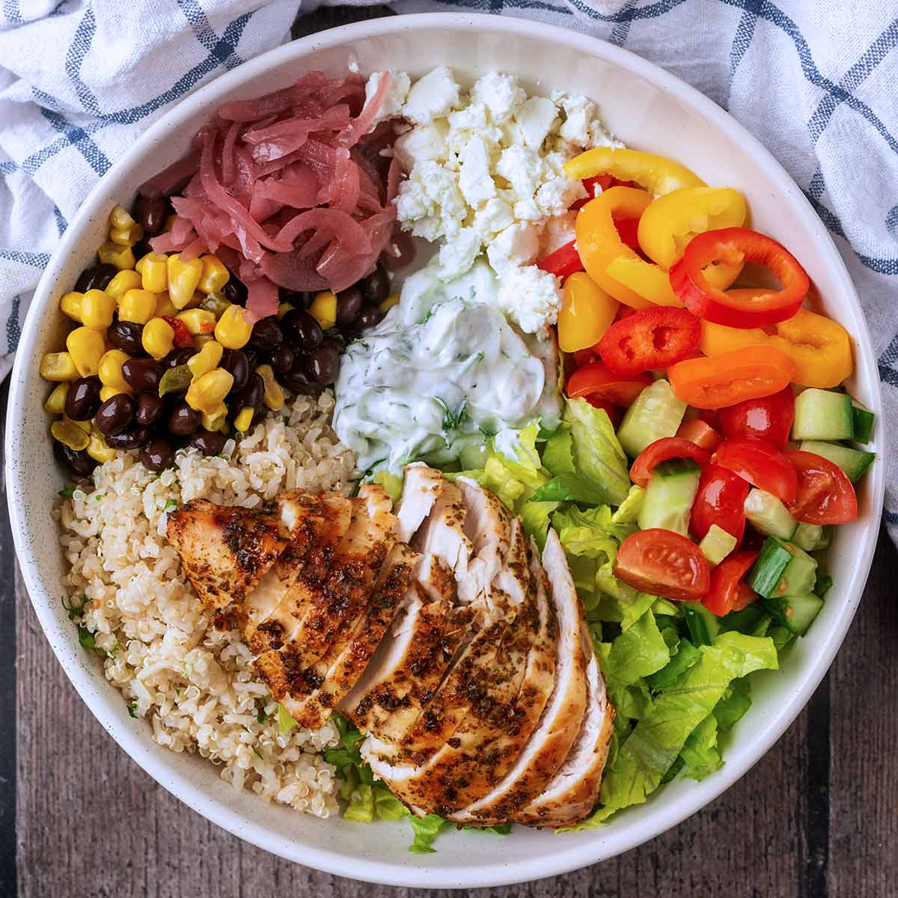

A chicken protein bowl is a wholesome, satisfying meal designed to fuel your body without sacrificing flavor. Tender, perfectly seasoned grilled chicken sits at the heart of the bowl, delivering a lean source of high-quality protein that helps support muscle growth and keeps you feeling full longer. It’s paired with a balanced base like fluffy brown rice, quinoa, or crisp greens, creating a hearty foundation that complements the savory richness of the chicken.
Fresh, colorful toppings bring the bowl to life—think crunchy vegetables, creamy avocado, and a drizzle of zesty sauce or light dressing for an extra burst of flavor. Every bite offers a mix of textures and nutrients, making it an ideal option for a healthy lunch or post-workout meal. Whether you’re focused on clean eating or simply craving something delicious and nourishing, a chicken protein bowl delivers both taste and nutrition in one convenient dish.